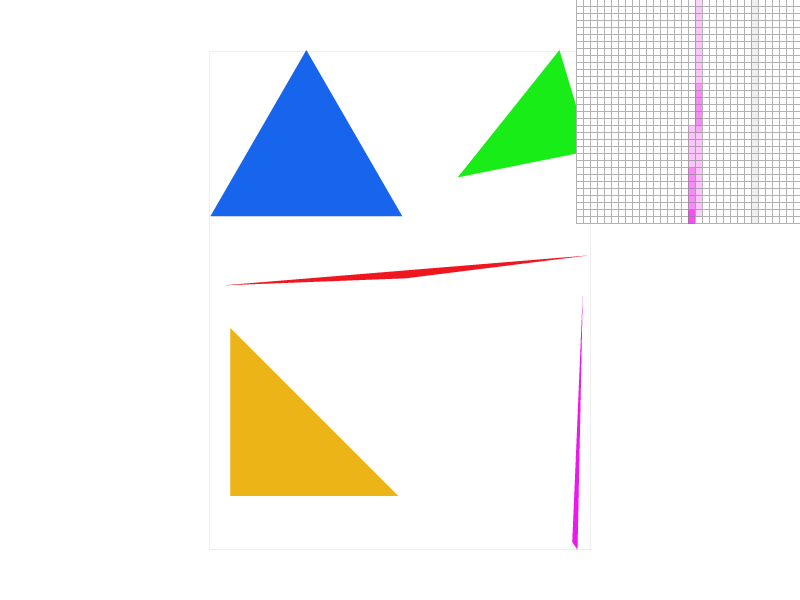
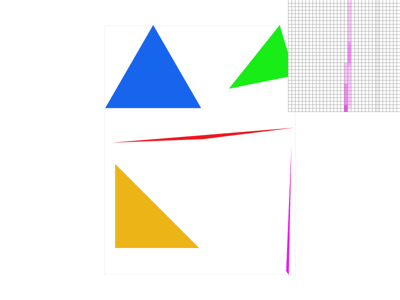

First we find the bounding box by taking the min and the max of all x and y coordinates. Then, we calculate the inside triangle function by using three different line equations, taking two points of the triangle and calculating the sign of the outside point. Therefore, for each line, we end up with a sign of which is technically “inside”. Then, for each point inside the bounding box, we check if it’s inside the triangle by comparing the sign of each of the three lines with our cached sign, and then if it is inside, we call rasterize_point to color the pixel.
Explain how your algorithm is no worse than one that checks each sample within the bounding box of the triangle.Our algorithm currently does check each sample within the bounding box of the triangle.
Show a png screenshot of basic/test4.svg with the default viewing parameters and with the pixel inspector centered on an interesting part of the scene.
Supersampling does the same thing as the last algorithm in task 1, except we iterate over all subpixel coordinates as well. However, this time, we have to keep a separate buffer to write in all of super pixels. We write into a sample buffer which is of size width <* sqrt(sample_rate), height *sqrt(sample_rate)>. Then, inside of the resolve_frame_buffer, we average the color values per superpixel, and then return an image in the original resolution. Supersampling basically samples the underlying function by averaging (and effectively blurring), and makes the lines look smoother since there is a gradient around edges.
Show png screenshots of basic/test4.svg with the default viewing parameters and sample rates 1, 4, and 16 to compare them side-by-side. Position the pixel inspector over an area that showcases the effect dramatically; for example, a very skinny triangle corner. Explain why these results are observed.
 

Sample Rate 1 |
Sample Rate 4 |
Sample Rate 16 |
Using supersampling helps make the resulting image appear more smooth and have less aliasing. This occurs because when we supersample, sampling the image at a subpixel level and then averaging the intensities in the subpixels is equivalent to applying a box-blur filter to the entire image before sampling. As a result, the underlying signal (in this case, the blurred image), has a lower underlying frequency, thus reducing the effects of aliasing.
We wanted to make cubeman wave with his right hand, so we adjusted the right arm to rotate to 45 degrees and then the forearm to rotate 20 degrees towards the head.
Barycentric coordinates is an interpolation strategy for points contained inside triangles. Each point within the triangle is assigned weights that roughly correspond to “how much influence” each vertex of the triangle has over the point; this is calculated by calculating the proportion of distances formed when projecting the point of interest to the altitude of the triangle dropped down from each of the three vertices. Using these weights, we can then interpolate values assigned to each of the three vertices to get a value for each point within the triangle. In this case, we use color as our quality to interpolate, and we weight the color based on the distance from each point. For example, near the blue coordinate, all of the coordinates are blue. But when it goes near the midpoint between the red coordinate and the blue coordinate, it turns into purple, since it’s equally weighted between red and blue.
Show a png screenshot of svg/basic/test7.svg with default viewing parameters and sample rate 1. If you make any additional images with color gradients, include them.
We are given the frame buffer coordinates and texture coordinates for each of a triangle’s vertices, and we would like to sample a pixel’s color within a given triangle. To do so, we first applied barycentric coordinates on the triangle to compute the pixel’s corresponding texture coordinates (u, v). Afterwards, we then either use nearest sampling or bilinear sampling to get the pixel color out of the texture map.
To perform nearest sampling, we figure out which pixel in the texture map is closest to the (u, v) coordinate of interest, and return the color at that pixel. On the other hand, to perform bilinear sampling, we determine the closest 4 pixels in the texture map that form a box around the (u, v) coordinate of interest; afterwards, we perform linear interpolation three times on the colors stored at the 4 pixels, twice in the horizontal direction and once in the vertical direction.
Check out the svg files in the svg/texmap/ directory. Use the pixel inspector to find a good example of where bilinear sampling clearly defeats nearest sampling. Show and compare four png screenshots using nearest sampling at 1 sample per pixel, nearest sampling at 16 samples per pixel, bilinear sampling at 1 sample per pixel, and bilinear sampling at 16 samples per pixel.Nearest Sampling, 1 Sample per Pixel |
Nearest Sampling, 16 Samples per Pixel |
Bilinear Sampling, 1 Sample per Pixel |
Bilinear Sampling, 16 Samples per Pixel |
When we look closely at the pixel inspector, we find that the edges of high frequency detail in the bilinear interpolation rendered image are much blurrier and have smoother transitions between different colored components compared to the nearest interpolation method. This is to be expected since nearest takes the color of the nearest texture coordinate and can result in high contrast at edges depending on the pixel’s distance from a texture point; however, bilinear interpolation weights its color based on the proportional distance from its 4 closest texture coordinate neighbors, which would then interpolate and blur between the texture. However, when we supersample at rate 16, there’s a very small difference since we already sample at a higher frequency and average, so the interpolation is not as noticeable.
When we are trying to apply a texture map to a surface, the rendering of the surface onto the screen can result in a variety of different sampling rates use on the texture map, thus creating a varying amount of aliasing on the screen. Level sampling aims to solve the problem of aliasing by sampling pixel colors from the appropriate level of mipmap, which can be determined separately for each pixel.
To implement this, for each pixel, we first computed its appropriate (u, v) coordinate via barycentric coordinates. Afterwards, we computed its appropriate mipmap level D, which is given by
We approximated the terms du / dx, dv / dx, etc. by calculating how much the (u, v) value changed when shifting the pixel’s original frame buffer (x, y) coordinates by 1 in the x and y directions.
Afterwards, if we were using the nearest level sampling strategy, we would round D to the nearest integer and sample the pixel’s color at the (u, v) point within that mipmap level. Otherwise, if we were using linear level sampling strategy, we would sample pixel colors from the two mipmap levels adjacent to D, and then interpolate the colors sampled from the two mipmap levels to produce the final color.
You can now adjust your sampling technique by selecting pixel sampling, level sampling, or the number of samples per pixel. Describe the tradeoffs between speed, memory usage, and antialiasing power between the three various techniques.For level sampling, when using level zero, you save space since you don’t use a mipmap, however you will have aliasing when you make the image smaller since the high frequency details will be sampled. However, when you use L_nearest, you pick the closest level of mipmap, which helps with aliasing, however when the mipmap values go to lowest resolution, it ends up being the average of the image so the variance in detail is lost. L_nearest is a lookup to one mipmap table, so it’s fast but uses more memory since it has a mipmap. In linear sampling, it does interpolate between levels for a more accurate transition, however it suffers from the same averaging problem at the lowest mipmap levels. It has a longer runtime than L_nearest since it has to do interpolation between mipmap levels, but the storage cost is the same.
For pixel sampling, the two choices are nearest sampling and bilinear interpolation. Nearest sampling can sample high frequencies, and so it ends up looking quite blocky and alaised at times, but it runs very quickly since it does one texel lookup. Bilinear interpolation on the other hand filters out high frequencies, and uses at most 4 texel lookups with 3 lerps, so the runtime is much slower. The two have the same memory overhead.
Lastly, supersampling controls how many times you sample within one frame buffer pixel, before you average them together. This gets rid of jaggies, and other problems by “blurring” the image, which filters out high frequencies and helps with aliasing. Your runtime and memory usage increase by the number of times you sample within a block.
Using a png file you find yourself, show us four versions of the image, using the combinations of L_ZERO and P_NEAREST, L_ZERO and P_LINEAR, L_NEAREST and P_NEAREST, as well as L_NEAREST and P_LINEAR. To use your own png, make a copy of one of the existing svg files in svg/texmap/ (or create your own modelled after one of the provided svg files). Then, near the top of the file, change the texture filename to point to your own png. From there, you can run ./draw and pass in that svg file to render it and then save a screenshot of your results. Note: Choose a png that showcases the different sampling effects well. You may also want to zoom in/out, use the pixel inspector, etc. to demonstrate the differences.L_ZERO and P_NEAREST |
L_ZERO and P_LINEAR |
L_NEAREST and P_NEAREST |
L_NEAREST ad P_LINEAR |